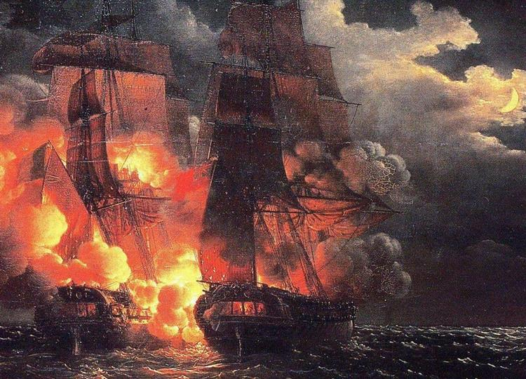
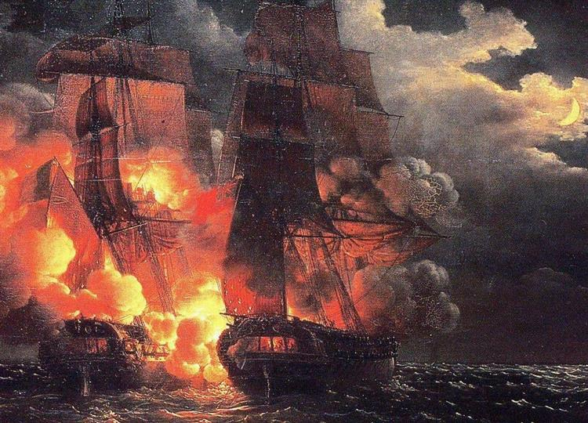

Louis-Philippe Crépinh
- Nacimiento:
1772; París, France
- Fallecimiento:
26 de noviembre de 1851
- Género:
Marina
- Campo:
Pintura
- Institución:
Indefinido
Trabajó como marinero a cargo de las velas, pero, luego de cuatro años, se internó en la pintura marina con Joseph Vernet y paisajes con Hubert Robert. Su primera exposición fue en París en 1796 con “La sortie du port de Brest”, en ese lugar presentó algunas obras hasta 1835. En 1817 tuvo un encargo de 20 años para crear pinturas marinas para el gobierno, por parte del “Ministre de la Marine et des Colonies”. Pero, esto tuvo una decepción: en realidad, el puesto de pintor del almirante de Francia era para Louis Garneray. A los 58 años, haciendo su propia publicidad, recibió el título de uno de los primeros pintores marinos oficiales del gobierno francés. A partir de este, participó en la invasión de Argel, pero, al final, el tan importante rol se convirtió en algo ceremonial, ya que, dejó de exponer obras en 1836.